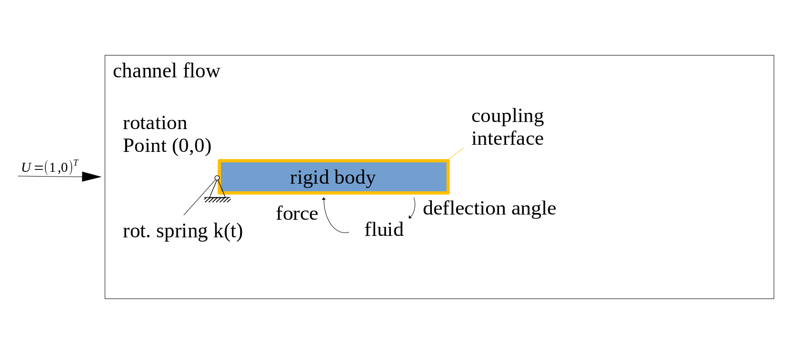
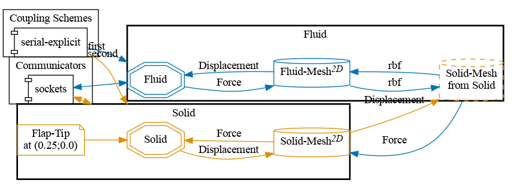
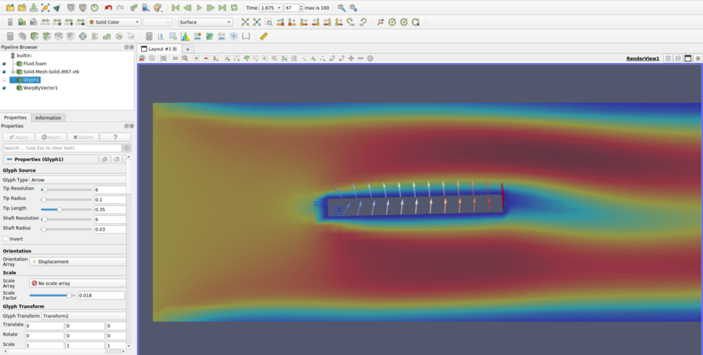

Quickstart
This is the first step you may want to try if you are new to preCICE: install preCICE and some solvers, and run a simple coupled case.

To get a feeling what preCICE does, watch a short presentation or a longer talk on the fundamentals.
Installation
For this tutorial, we will mainly need to install preCICE, OpenFOAM, and the OpenFOAM-preCICE adapter. In many parts of the preCICE documentation, we assume a Linux system (most commonly a recent Ubuntu LTS). If you are on Windows, Ubuntu on Windows (WSL) works. If you are on macOS or a Linux distribution other than Ubuntu, then Homebrew is the way to go (both for preCICE and for OpenFOAM).
-
Get and install preCICE. For Ubuntu 26.04 (Resolute Raccoon), this is pretty easy: download and install our binary package by clicking on it or using the following commands:
wget https://github.com/precice/precice/releases/download/v3.4.1/libprecice3_3.4.1_resolute.deb sudo apt install ./libprecice3_3.4.1_resolute.debOS Package Ubuntu 22.04 Jammy Jellyfish libprecice3_3.4.1_jammy.debUbuntu 24.04 Noble Numbat libprecice3_3.4.1_noble.debUbuntu 26.04 Resolute Raccoon libprecice3_3.4.1_resolute.debDebian 13 Trixie libprecice3_3.4.1_trixie.debSomething else See an overview of options Facing any problems? Ask for help.
-
We will use OpenFOAM here and in many of our tutorial cases, so install OpenFOAM:
# Add the signing key, add the repository, update (check this): wget -q -O - https://dl.openfoam.com/add-debian-repo.sh | sudo bash # Install OpenFOAM v2512: sudo apt install openfoam2512-dev # Enable OpenFOAM by default in your system and apply now: echo "source /usr/lib/openfoam/openfoam2512/etc/bashrc" >> ~/.bashrc source ~/.bashrc -
Install a few common dependencies that we will need later:
sudo apt install build-essential pkg-config cmake git -
Download and install the OpenFOAM-preCICE adapter:
wget https://github.com/precice/openfoam-adapter/archive/refs/tags/v1.3.1.tar.gz tar -xzf v1.3.1.tar.gz cd openfoam-adapter-1.3.1/ ./Allwmake cd .. -
Get the quickstart tutorial case:
wget https://github.com/precice/tutorials/archive/refs/tags/v202404.0.tar.gz tar -xzf v202404.0.tar.gz cd tutorials-202404.0/quickstart
If you prefer to easily try everything in an isolated environment, you may prefer using our demo virtual machine.
Case setup
We will couple OpenFOAM with a C++ rigid body solver for fluid-structure interaction. The rigid body has only a single degree of freedom, namely the deflection angle of the flap in the channel. It is also fixed in the origin at (0,0) and the force exerted by the fluid on the rigid body structure causes an oscillatory rotation of the body. The simulation runs for 2.5 seconds.
In order to gain more control over the rigid body oscillation, a rotational spring is applied at the rigid body origin. After 1.5 seconds we increase the spring constant by a factor of 8 to stabilize the coupled problem. Feel free to modify these parameters (directly in rigid_body_solver.cpp) and increase the simulation time (in precice-config.xml).

Configuration
preCICE configuration (image generated using the precice-config-visualizer):

Building the rigid body solver
Before starting the coupled simulation, we need to build the rigid body solver. You can run the following commands from the solid-cpp directory to build the rigid_body_solver.cpp:
cd tutorials/quickstart/solid-cpp
cmake . && make
Running the coupled simulation
You may run the two simulations in two different terminals and watch their output on the screen using ./run.sh from inside the directory of each participant:
# Terminal window 1
cd tutorials/quickstart/solid-cpp
./run.sh
# Terminal window 2
cd tutorials/quickstart/fluid-openfoam
./run.sh
# Alternative, in parallel: ./run.sh -parallel
You can also run OpenFOAM in parallel: ./run.sh -parallel.
In serial, the simulation should take less than a minute to compute (simulated time: 2.5s).
run-openfoam.sh with run-foam-extend.sh in the run.sh script.
Visualizing the results
You can visualize the simulation results of the Fluid participant using ParaView and loading the (empty) file fluid-openfoam/fluid-openfoam.foam. The rigid body does not generate any readable output files, but the OpenFOAM data should be enough for now: click “play” in ParaView, the flap should already be moving! 🎉
You may be curious what displacements OpenFOAM received from the rigid body solver. We can actually easily visualize the coupling meshes, including the exchanged coupling data: preCICE generates the relevant files during the simulation and stores them in the directory solid-cpp/precice-exports. Load these VTK files in ParaView and apply a Glyph filter with Glyph Type: Arrow,Orientation Array: Displacement, and Scale Array: No scale array. You can further add a Warp By Vector filter with Displacement to deform the coupling data. The result should look as follows:

Additionally, as we defined a watchpoint on the Solid participant at the flap tip (see precice-config.xml), we can plot it with gnuplot:
./plotDisplacement.sh
The resulting plot shows the y-displacement of the flap tip over time.
Running again (and again, and again)
Now that you have a first working example, experiment! For example, how can you tell preCICE to simulate for a longer maximum time?
Before running the simulation again, cleanup the results and temporary files using ./clean-tutorial.sh.
What’s next?
To become a preCICE pro:
- Get an overview of the preCICE docs.
- See what users talk about in the preCICE forum.
- Run tutorials with other coupled solvers.
- Watch some preCICE videos.
- Meet our community.
- Find out how to couple your own solver.
- Tell us your story.
Are you just starting with simulation software on Linux? Note that much of the complexity for partitioned simulations comes from working with multiple software packages and some new tools. These resources may help your first steps:
- E-book Research Software Engineering with Python.
- Material of the course Simulation Software Engineering (University of Stuttgart).
- Material of the course The Missing Semester of Your CS Education (MIT).